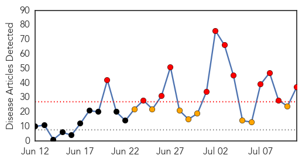
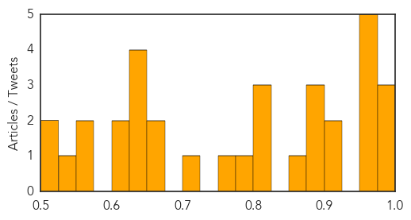

Ebola
30-Day Web Trend
12 alerts, 8 warnings

30-Day Twitter Trend
7 alerts, 0 warnings

Article Locations

Article Confidences

Top Articles:
- 1.000
- West Africa Facing Largest Ebola Outbreak Ever
- 1.000
- WHO Announces that Ebola Death Toll Increases
- 1.000
- Misconceptions fuel spread of Ebola in West Africa
- 1.000
- UN says rumours, fear help Ebola spread
- 1.000
- The Facts Behind A Frightening Virus
- 1.000
- Africa’s ‘unprecedented’ Ebola crisis
- 1.000
- Sierra Leone: Race against time to control the Ebola outbreak
- 1.000
- Ebola epidemic: 'For some, Ebola is akin to magic'
- 1.000
- Surge in Deaths From Virus in Guinea, Liberia and Sierra Leone
- 1.000
- Ebola epidemic unlikely to spread beyond Africa
- 1.000
- Ebola epidemic unprecedented in West Africa, medical aid group says
- 1.000
- West Africa Ebola outbreak nears 900 cases
- 1.000
- 'Race against time' to control ebola outbreak
- 1.000
- Flashcard: Ebola
- 1.000
- Ebola Outbreak Plagues West Africa
- 0.999
- Unicef says misconceptions fuel Ebola outbreak in West Africa
- 0.999
- West Africa Ebola Outbreak Forces Hundreds to be Kept Under Surveillance in Liberia
- 0.999
- More than 500 dead from Ebola in west Africa as virus continues to spread
- 0.999
- WHO warns ebola deaths on the increase
- 0.998
- Ebola aid for West Africa
- 0.998
- Ebola virus in Guinea is a new strain, not imported from other African countries
- 0.998
- Ebola became a matter of belief in Liberia - Liberia
- 0.998
- West Africa Looks To Mobile Technology To Help Stop Ebola
- 0.997
- Tests rule out Ebola in case of sick Saskatchewan man, say health officials
- 0.997
- Ebola deaths surge in Sierra Leone and Liberia - WHO
- 0.994
- Ebola Outbreak Provokes Shift in Attitudes Towards Health Care and Burial Rituals in Sierra Leone
- 0.990
- Misconceptions fuel Ebola outbreak in west Africa: UNICEF
- 0.988
- Ministries of health, Agriculture, Interior Partner on Ebola Virus
- 0.980
- Police: Essex shooting victim targeted, robbed
- 0.980
- Influx of child migrants demands immediate U.S. response
- 0.946
- ECOWAS leaders set up fund to deal with the Ebola
- 0.910
- ECOWAS summit dominates Ghanaian media
- 0.900
- MOH Puts 433 Persons under Surveillance
- 0.877
- President Koroma Attends 45th ECOWAS Summit
- 0.603
- NP supports EBOLA fight « Awoko Newspaper
- 0.602
- ECOWAS leaders establish solidarity fund for Ebola
- 0.511
- Minister challenges doctors to public debate over strike
Top Tweets:
-
No tweets found for Jul 11, 2014
Measles
30-Day Web Trend
0 alerts, 0 warnings

30-Day Twitter Trend
0 alerts, 0 warnings

Article Locations

Article Confidences
Top Articles:
- 0.996
- Why are Canadian measles outbreaks so much larger than U.S. outbreaks?
- 0.980
- BCIT student sick with measles from Fraser Valley outbreak
- 0.978
- Measles 'early and active' in U.S.
- 0.970
- Manitoba measles case prompts warning about exposure at strip bar
- 0.963
- Never mind SARS or MERS, worry about measles: Commentary
- 0.958
- 100 measles cases reported in Fraser Valley outbreak
- 0.958
- More Suspected Cases In Regina Area, Officials Urge Shots
- 0.956
- Measles outbreaks prompt health officials to remind people to get vaccinated
- 0.915
- B.C. measles outbreak reveals vulnerability of unvaccinated children
- 0.900
- 8th Manitoba measles case has officials warning of exposure at strip bar
- 0.899
- Hospital measles alert
- 0.899
- Measles outbreaks hit 18-year high in Washington state
- 0.893
- Rash Of Measles Illustrates Importance Of Immunization
- 0.865
- Measles warning for two WA hospitals
- 0.823
- Chickenpox hits young cancer patient, despite vaccination
- 0.804
- Measles spreading in Fraser Valley East
- 0.803
- Measles outbreak in Khomas
- 0.798
- Measles Cases Underscore Importance of Immunization
- 0.772
- Metro Calgary Quotes Anti-Vaccine Homeopath Day After Measles Outbreak Declared
- 0.703
- Infant contracted measles from worker at Wichita restaurant
- 0.674
- Baby has latest case of measles to show up in the Edmonton area
- 0.660
- B.C. government won't force measles vaccination amid outbreak
- 0.645
- More probable measles cases in unimmunized children in Saskatchewan
- 0.640
- Anti-Vaxxers Are Stupid and Contagious
- 0.633
- Measles On Canadian Flight Prompts Health Warning
- 0.626
- 2nd measles case confirmed in Edmonton area
- 0.611
- Measles cases hit 18-year high in Washington state
- 0.600
- Saskatchewan reports measles case in baby whose family arrived by air this month
- 0.554
- IDPs woes: Few doctors willing to volunteer for relief work
- 0.552
- Anti-vaccine message from some naturopaths raises concerns
- 0.547
- Ontario Vaccine Rules Get Tougher For School-Age Kids
- 0.517
- Calgary Measles Cases Keep Unvaccinated Students At Home
- 0.510
- Stop the Fear-Based Propaganda About Vaccines
Top Tweets:
-
No tweets found for Jul 11, 2014